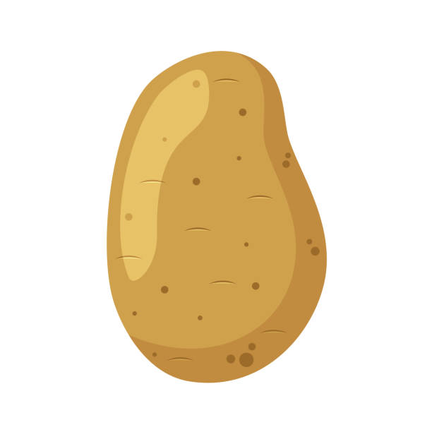
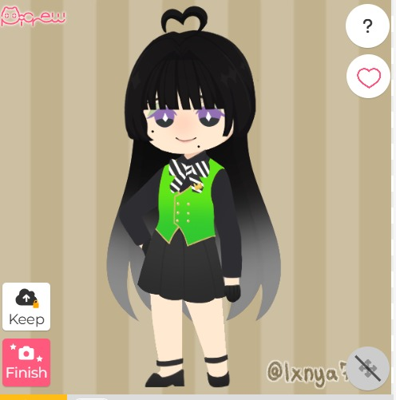

Las estrellas solo escuchan a quienes se atreven a desear.
✦ Esta experiencia tiene sonido ✦
Cargando...
a twist community
yumeshipping
Hay tradiciones en Night Raven College que trascienden por encima de solo costumbres. Gestos inofensivos y románticos vestidos de magia que deberían de quedarse solo siendo una linda foto, un par de buenos recuerdos y un punto más en la línea del tiempo de las personas que poco a poco fueron abandonando los pasillos del instituto. La recolección de las Wishing Stars, el tejido de las túnicas celestes y la danza ritual bajo el gran árbol eran, para la mayoría, solo un motivo de fiesta antes de una gran despedida.
Desde hace cuatro años ya, durante los últimos días de una de las promociones que vio ir y venir grandes sucesos para la NRC y STYXX, los jóvenes de último año entregan su anhelo más íntimo a los Stargazers. Pidiendo al cielo con la desesperación cualquier cosa que les diera alivio ahora que están a punto de dar un salto al vacío de la adultez: promesas de grandeza, miedos no confesados, pactos de lealtad o quizás el simple deseo de no ser olvidados, romance, venganza, o incluso absolutamente nada más que un cono de helado al llegar a casa.
A la mañana siguiente, al empacar las maletas y cruzar los portones de Night Raven College por última vez como estudiantes, no hubo destellos cegadores ni explosiones, ni despedidas estridentes al final del camino. La transición al mundo mágico exterior continuó con normalidad aparente.
Todo esto no sería mayor problema, si no es por que el gran árbol de Night Raven College no ha vuelto a florecer desde que se fueron, y las estrellas que jamás fueron reclutadas están comenzando a devorar la propia identidad de quienes las abandonaron.
Si no regresan al campus, si no vuelven a pisar las canchas, los laboratorios y las salas comunes para desenterrar los fragmentos de lo que sintieron aquella noche, el vacío dejará de ser una molestia lejana para convertirse en una amnesia absoluta.
Los pasillos de la academia los aguardan. Pero para recuperar la memoria de su deseo, primero tendrán que recordar quiénes eran antes de que el mundo exterior los obligara a cambiar.
Que todos tus deseos se hagan realidad


Somos un team de rolplay que quiere poder llevar la experiencia de yumeshipping a audiencias mayores dentro del universo de Twisted Wonderland.
Acepta las normas de convivencia para revelar el código y escanéalo con la cámara de tu teléfono para entrar a nuestro grupo de WhatsApp.
Te esperamos bajo las estrellas ✦